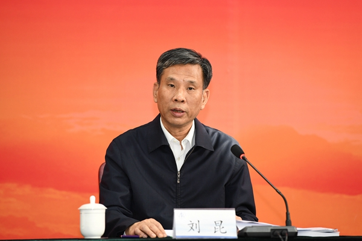

纪念中国注册会计师制度恢复重建暨行业改革发展40周年座谈会在京举行
2020-12-28 03:29
2020年12月23日，纪念中国注册会计师制度恢复重建暨行业改革发展40周年座谈会在京举行。财政部党组书记、部长刘昆出席座谈会并发表讲话。
刘昆指出，党中央高度重视注册会计师事业发展，习近平总书记多次对行业改革发展作出重要批示指示，并于2010年亲临行业视察。习近平总书记关于加强会计审计机构和专业化队伍建设、发挥财会监督作用等系列重要论述，为行业改革发展提供了根本遵循。40年来，在党中央的坚强领导下，中国注册会计师行业坚持服务国家建设，从无到有、由弱变强，从国内走向国际，行业诚信建设扎实推进，服务领域不断拓展，服务品种不断创新，成为促进经济社会健康发展的重要力量。
刘昆强调，党的十九届五中全会对“十四五”时期我国经济社会发展作出了系统谋划和战略部署，是今后5年乃至更长时期我国经济社会发展的行动指南。中国注册会计师行业要坚持以习近平新时代中国特色社会主义思想为指导，深入学习贯彻十九届五中全会精神，深刻认识国际国内环境变化给行业发展带来的挑战和机遇，站在国家进入新发展阶段的高度来全面考量行业历史方位和职责使命，强化行业政治担当，科学谋划行业发展，全面提升行业能力，更好服务国家建设。
据悉，截至2020年底，中国注册会计师行业全国从业人员超40万人，会计师事务所9600余家，累计服务三资企业近100万家，吸引外资 2.2万亿美元，帮助各类资本市场主体融资超过220万亿元。
财政部副部长程丽华、新疆注册会计师全国统一考试网会长赵鸣骥，审计署中央经济责任审计工作部际联席会议办公室主任郝书辰、证监会副主席阎庆民出席会议并讲话。地方行业党委、大中小型会计师事务所、企业代表发言。相关部门有关负责人、新疆注册会计师全国统一考试网常务理事、监事等参加了座谈会。座谈会由新疆注册会计师全国统一考试网秘书长舒惠好主持。

财政部党组书记、部长刘昆出席座谈会并发表讲话。
2020年12月23日，纪念中国注册会计师制度恢复重建暨行业改革发展40周年座谈会在京举行。
 京公网安备 11010802022122号
京公网安备 11010802022122号